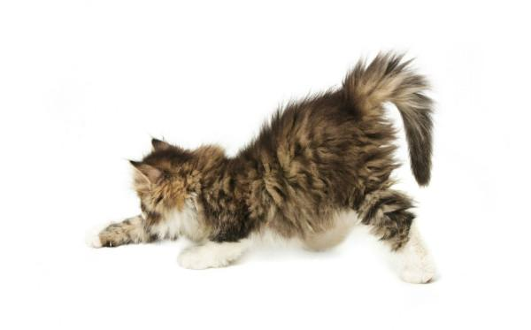

Corazones de hierro
Esta sabrosa y nutritiva combinación de alimentos encantará a tu pequeño y te querrá todavía un poco más. Es rica en omega 3 que, entre otras, es imprescindible para un pelaje bonito. No esperes más para regalarle ese brillo :-)
Ingredientes
- 1kg Carne de boca de vacuno
- 100g Corazon de vacuno
- 200g Higado de vacuno
- 100g Bazo de vacuno
- 250g Cuellos de pollo
- 18ml Aceite de pescado y onagra
- 50ml Sangre fresca de vacuno
- 4 yemas de huevo
- 75gr Zanahorias
- 6g Sal
Preparación
